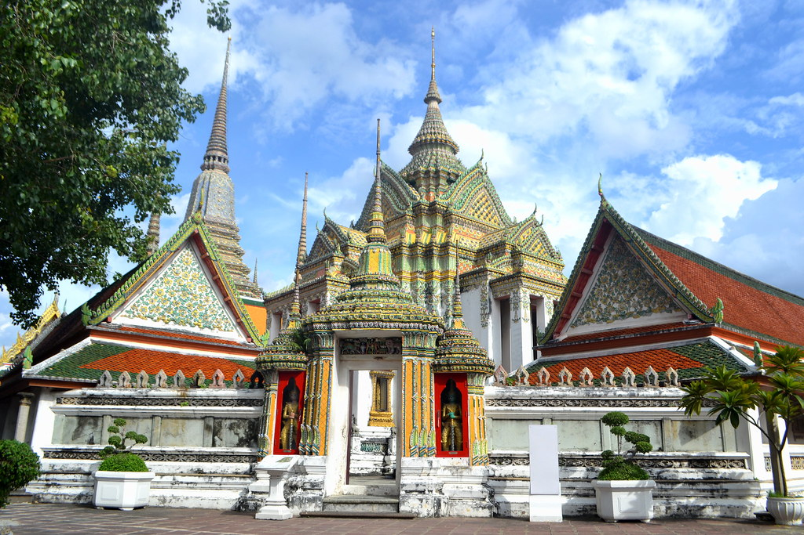
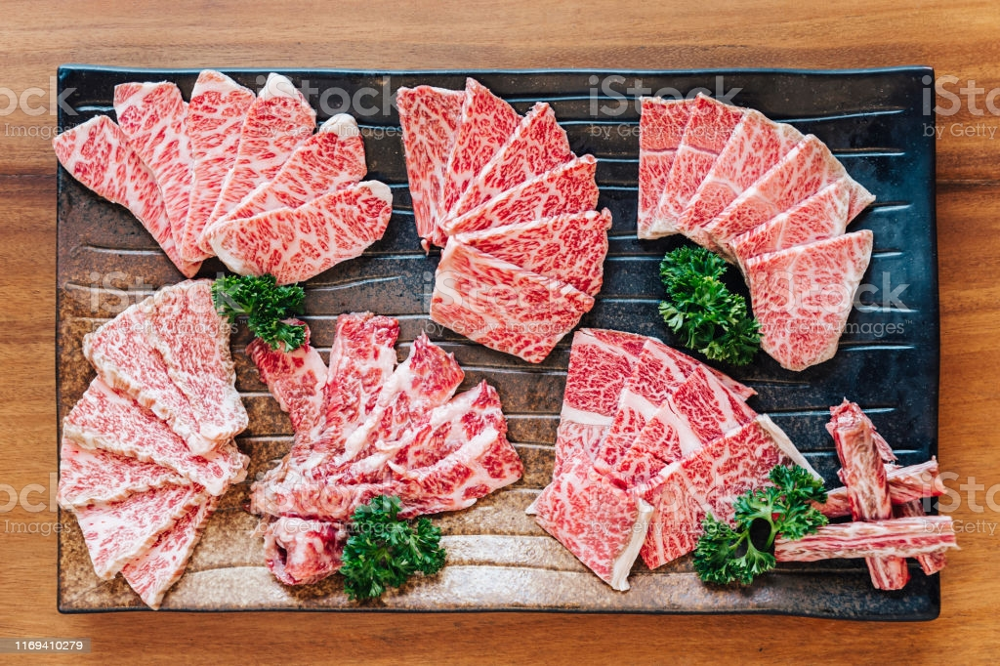

Live in Bangkok since I was born so I'm Bangkokian right?

Bangkok is the capital and most populous city of Thailand, also known by its endonym Krung Thep Maha Nakhon or colloquially Krung Thep.
One of Bangkok’s largest attractions, the Wat Pho temple houses the famous Reclining Buddha, which measures a stunning 47 metres in length. Therefore, seeing it in person is surely the only way to appreciate its sheer size. Additionally, the 15-metre high statue is covered in gold leaves, leaving viewers in awe. Besides the statue being the temple’s main attraction, visitors will also find the temple to be adorned with colourful murals. Moreover, the temple has almost 400 Buddha images to see. If you spend a bit of time walking around Wat Pho, you will see that it features, what many call, is Thailand’s best massage school. Here, you can get a traditional Thai massage to unwind from a visually exciting day. After, you can plan to see the Grand Palace, as it is only a 10-minute walk from Wat Pho.
Address 2 Thanon Sanam Chai, Khwaeng Phra Borom Maha Ratchawang, Khet Phra Nakhon Krung Thep Maha Nakhon, 10200, Thailand.
Chatuchak Weekend Market, also known as JJ Market, is one of the world’s largest outdoor markets. Here, your shopping dreams for something bohemian can definitely be fulfilled. From unique artworks to traditional handicrafts, Chatuchak has a diverse product collection. You can even find gag gifts, such as genitalia-shaped soaps and ashtrays. However, as the market is crowded on the weekends, it is a good idea to visit in the morning. Moreover, the day’s first shoppers usually get a good discount. Remember, that quoted prices are a suggestion, as vendors expect you to bargain with them.

Address Kamphaeng Phet 2 Road, Khwaeng Chatuchak, Khet Chatuchak Krung Thep Maha Nakhon, 10900, Thailand
What can be more exciting than seeing The Grand Palace in Thailand’s capital? Here, just seeing it from the streets won’t cut it, even though the white walls hiding its priceless contents are quite beautiful. Once paying for a ticket, visitors will be granted entry into a magical attraction, full of stunning temples spread across the property. Thus, it can be said that a visit to Bangkok is never complete without seeing the Palace. One of the most famous temples inside of the walls is that of Wat Phra Kaew, or the Temple of the Emerald Buddha. Inside, you can see an emerald and gold adorned Buddha wearing a cloak that is changed by the King, with each new season. At night, the Grand Palace lights up the Bangkok skyline, making it a spectacular scene with many opportunities for an enchanting photo op.

Address Khwaeng Phra Borom Maha Ratchawang, Khet Phra Nakhon Krung Thep Maha Nakhon, 10200, Thailand
The Jim Thompson House Museum is undoubtedly one of the most interesting sights in Thailand’s capital. As its history includes being part of the silk trade’s revival, shopping at Jim Thompson is unrivalled. However, despite his efforts to showcase Thai silk, Thompson mysteriously went missing while in Malaysia, back in 1967. He was never found again. The museum has dedicated a part of it towards exploring the many theories about how he went missing. Regardless, the museum’s impressive showcase of unique and expensive relics may just be one of the most beautiful displays of Thailand’s rich culture.

Address 6 Soi Kasem San 2, Khwaeng Wang Mai, Khet Pathum Wan Krung Thep Maha Nakhon, 10330, Thailand
For backpackers, a trip to Bangkok starts at Khao San Road. Known as a place to stop off, enjoy the crazy night scene, and meet fellow travellers, this road has some epic stories coming out of it. The road is 1 km long and is filled with street food vendors, bars, chain restaurants, and bar girls. They say you can find anything on Khao San Road, including fried scorpions and other insects in which to try. But, don’t worry, they all taste like chicken! After you try a bite, you can wash it down with a bucket of jungle juice. As the scene can get quite crowded at night, most bars extend chairs out into the road to offer more seating for people. Alas, nothing is more famous for backpackers stopping off at The Big Mango, than Khao San!

Address Khaosan Road, Khwaeng Talat Yot, Khet Phra Nakhon Krung Thep Maha Nakhon, 10200, Thailand
I'm trying to survive this cruel world with poor coding skill, so ARE YOU WITH ME?
Wagyu beef—you know, the transcendently tender, fatty, umami-rich steak—has become as synonymous with luxury as caviar or black truffles. But no matter how many Michelin-starred menus this delicacy graces, all of the facts about Wagyu steak still tend to elude even the most seasoned diners.
